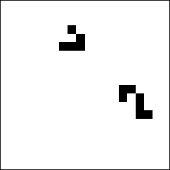

| To keep leftover gliders from escaping, the path from the glider gun is terminated by an eater, a stable configuration of cells that destroys a glider colliding with it, and then rebuilds itself. |
|  |
| Click on the picture to return. |
Return to the and operation.